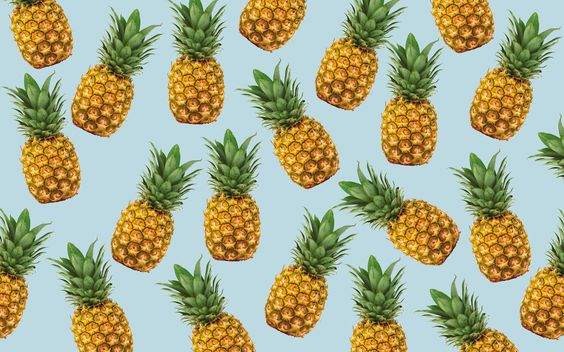
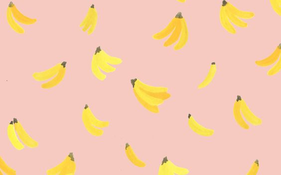
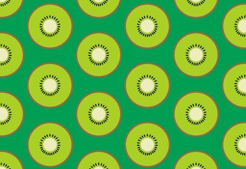

No contiene grasa, sodio ni calorías, basta con ver ese atractivo color rojo para saber que contiene un alto nivel de antioxidantes, ideal para prevenir el envejecimiento y mantener en estado nuestros tejidos. #ComeFruta
Comment...
La piña
20/9

23 likes
La piña es una fuente rica en antioxidantes como la vitamina C, yodo, magnesio, fósforo y calcio que, además de reforzar las defensas, también tienen una acción positiva en la tiroides y las células nerviosas. #ComeFruta
Comment...
La banana
20/9

23 likes
El banano es una fruta que contiene altos niveles de potasio, sacarosa, fructosa y glucosa, nutrientes que al ser consumidos regularmente le proporcionan a nuestro cuerpo energía. #ComeFruta
Comment...
El kiwi
20/9

23 likes
El kiwi es rico en fósforo (esencial para la mineralización del hueso), magnesio (regula la absorción y asimilación del calcio) y potasio (evitar la eliminación del calcio). #ComeFruta